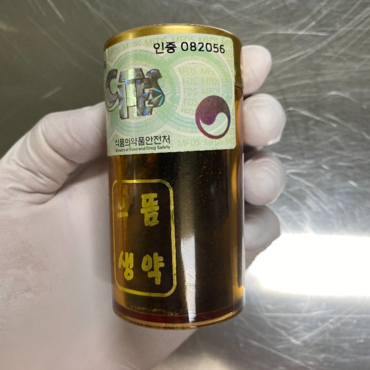
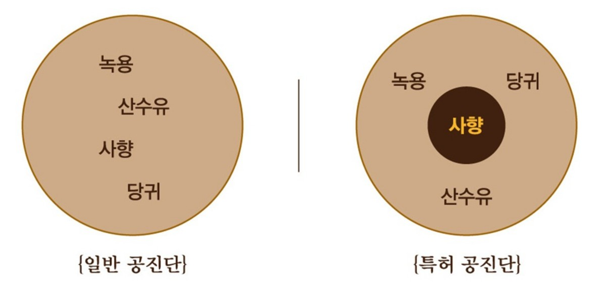
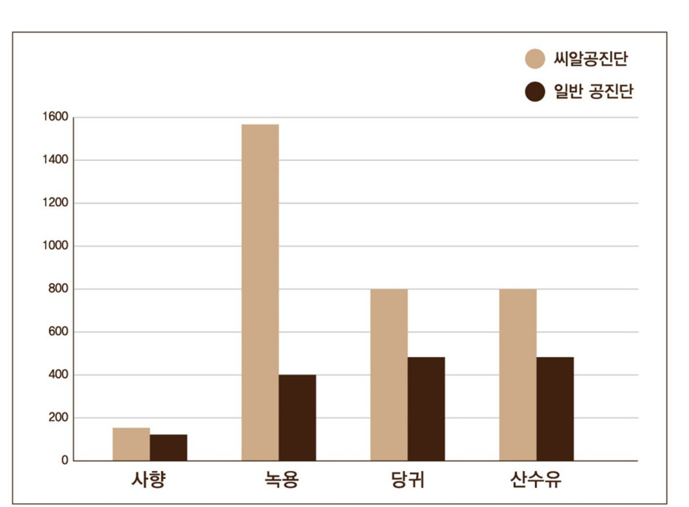

珍贵的一丸，
了解后再好好服用。
本指南适用于获处方的原方（Wonbang）与实惠型（Silsok）使用者。建立轻松的日常服用习惯，并留意生活中的变化。
从今天开始这样服用
即使处方医师已经说明过，也请再次确认以下步骤。如您收到个别服用指导，请优先遵循该指导。
前一晚取出第二天要服用的1丸。
保持包装未开封，可在室温下放置一夜。其余药丸平时冷藏，避免阳光直射、暖气旁及高温车内。也可以从冰箱取出后直接服用，但接近室温时更容易含化。
早晨空腹先喝一杯水。
润湿口腔后，将1丸放入口中慢慢含化。也可以先刷牙、清洁口腔后再服用。
留意核心部分带来的味道与香气变化。
开始可能感到鹿茸、蜂蜜、山茱萸的味道，之后出现较明显、在口中扩散的另一种香气，这是集中放置麝香的核心部分。较硬的部分可能是一块，也可能分成几块，可以嚼服；时间充裕时，也可继续慢慢含化。
整丸服完后，约30分钟再刷牙。
这是Bodyall建议的服用方式，让您充分感受口中留下的香气。请从整丸含化完毕时开始计时。服完后可以立即进食。
早晨忘记服用怎么办？
固定时间有助于坚持服用并比较反应。漏服一次，不意味着之前的变化全部归零。
忙碌的早晨也能从容服用
上班前可先刷牙、清洁口腔，再坐着进行轻松工作时慢慢含化。口中含有药丸时，请避免驾驶、操作机器及剧烈运动。
了解您获处方的拱辰丹
网上的“拱辰丹”，和处方拱辰丹一样吗？
购买被宣传为“拱辰丹”的食品，与医师诊察后开具的天然麝香拱辰丹不同。
网上和社交平台常能看到名称、包装相似的食品。比起外观，更应确认产品类别、实际原料与天然麝香含量。即使名称使用类似“灵猫麝香”的说法，灵猫香（Civet）仍是与麝鹿天然麝香不同的原料。1
| 确认项目 | 网上名称相似的食品 | Bodyall 씨알拱辰丹 |
|---|---|---|
| 产品性质 | 按普通食品、健康功能食品等食品类别销售的产品 | 由韩医师诊察后开具的韩药 |
| 是否为天然麝香 | 如果使用灵猫香，不能据此视为天然麝香 | 使用正品天然麝香 |
| 含量指什么 | 灵猫香含量不能当作天然麝香含量 | 原方100mg · 实惠型40mg |
| 如何核实 | 看食品类别与原料标示，而不只看宣传 | 可申请查看标有认证标志及认证编号的原料照片 |
| 由谁选择 | 购买者根据广告、商品页面自行选择 | 医师确认身体状况及正在服用的药物后开方 |
| 服后咨询 | 向销售方询问商品问题 | 通过已告知的院长直接咨询渠道咨询服用问题 |
如果只因香气相似或名称叫“拱辰丹”，就认为是同一种药，可能完全误解其作用。不要仅凭服用灵猫香食品的体验，判断天然麝香拱辰丹的效果。
使用带有CITES认证标志的正品天然麝香。
Bodyall韩医院的씨알拱辰丹使用包装上标有CITES认证标志及认证编号的正品天然麝香原料。

患者提出请求时，Bodyall可提供所使用麝香原料的照片，供您查看认证标志及认证编号。
咨询麝香原料照片名称相似，不代表是同一种麝香
| 灵猫香 · Civet | 天然麝香 · Natural musk | 合成麝香酮 · Muscone |
|---|---|---|
| 来自灵猫类而非麝鹿，是不同原料 | 来自麝鹿的天然原料 | 合成麝香中的一种成分——麝香酮 |
| 与天然麝香的成分构成不同 | 含麝香酮等多种成分的复合天然原料 | 单一麝香酮成分不等于完整天然麝香 |
| 不是天然麝香 | 씨알拱辰丹所使用的原料 | 不是天然麝香 |
灵猫香与麝香的原料不同；麝香酮是天然麝香中的一种成分。1, 3
确认您获处方的原方或实惠型
| 每丸 | 原方 Wonbang | 实惠型 Silsok |
|---|---|---|
| 药丸重量 | 6g | 6g |
| 天然麝香 | 100mg | 40mg |
| 鹿茸 | 1,500mg | 1,500mg |
原方与实惠型的区别在于麝香含量，服用方法相同。请按处方的种类和数量服用。
将麝香置于中央的“씨알”核心结构
为减少制作、保管过程中麝香芳香成分的损失，并充分利用珍贵原料，形成了씨알拱辰丹的设计。将麝香聚成小核心，再以含鹿茸、当归、山茱萸等药材的团料包裹调制。
中央麝香核心及外层包裹的制作方法，记载于韩国第10-1744704号专利。4

点击图片可查看大图。
在自己的生活中观察变化
不要只问“有没有变好”，可以比较原本最困难的时刻：早晨起床、下午继续工作，或下班后重新活动。
每天30秒，记录三件事
① 疲劳0～10分（0：没有，10：最严重）② 选定的生活目标是否更轻松 ③ 睡眠、咖啡、工作量及不适。比较相似情境下的记录，有助于下一次咨询。
服用原方的人这样描述
身体与心情“每天服用下来，觉得原本沉重的身体和心情稍微轻松了一些。”
脑力工作“我的工作需要大量思考，感觉像是脑力的耐力有所增加。”
付诸行动“以前知道该做，却总拖延；后来感觉更有愿意尝试的力量。”
压力情境“压力大时，原来头脑混乱、话也不容易说出来。后来觉得判断和表达时更平静了一些。”
重要测试“在重要测试当天早晨服用时，感觉平静，同时又更有活力。”
重新活动的日常“心情轻松些以后，又开始活动，活动起来也觉得更有活力。”
以上内容为真实患者实际服用原方体验的匿名整理。请以自己的生活为基准，观察自己发生的变化。
亲自服用的韩医师体验
“喝咖啡时，有时会心跳快、焦虑地不停活动，作用退去后很疲惫。服用原方拱辰丹时，感觉头脑清晰，同时心情平静。”
“感觉心中有了更多余裕。眼前更清晰，自己平静下来时，头脑仍很活跃。”
以上两则均为亲自服用原方的韩医师个人体验，匿名整理。
研究关注了哪些方面？
拱辰丹研究不仅关注疲劳，也关注睡眠、生活质量及日常功能。观察自身变化时，也可以这些生活方面为参照。
限制睡眠时的疲劳与睡眠
2018年的随机安慰剂对照交叉研究，在睡眠受到限制的健康男性中评估了疲劳、睡眠及压力相关指标。5
慢性疲劳与生活质量
2024年的随机对照研究，在慢性疲劳患者中评估了疲劳评分、生活质量及社会功能等变化。6
各研究使用的拱辰丹组成、剂量及对象不同，也并非直接比较씨알拱辰丹原方与实惠型效果的资料，但可帮助了解拱辰丹药材组成可能呈现的作用。
原宣传册中的药材含量比较

点击图片可查看大图。
常见问题
没有匹配的问题，请使用下方咨询方式。
时间与方法
原方与实惠型的服用方法不同吗？
方法相同。麝香含量不同，请勿增加实惠型的丸数来模仿原方，按处方数量服用。
早晨没服用怎么办？
午餐前约30分钟，以同样方式服用1丸。先确认当天是否已经服用，避免重复。
午餐也错过了，可以晚餐前服用吗？
可以考虑，但清醒感持续较久或睡眠敏感的人，应避免较晚服用，并与处方医师商量时间。
昨天忘记了，今天要服2丸吗？
不要为补服而服2丸，今天恢复原来指导的剂量。
较硬的核心一定要全部含化吗？
可以嚼服。可能是一块，也可能是多块。时间充裕时可继续慢慢含化。
没有明显感到核心或香气。
唾液量及含化方式可能影响感觉。不要只凭香气强弱判断含量或反应。如担心产品状态，请附包装照片咨询。
直接吞下了，需要再服1丸吗？
不要再服。下次服用时慢慢含化即可。
空腹服用胃不舒服。
不要勉强继续空腹服用。请告诉处方医师不适及原有胃肠症状，调整服用时间。
刷牙、饮食与咖啡
服用前可以刷牙吗？
可以，先刷牙、清洁口腔后再服用。服后建议从整丸服完开始，约30分钟后再刷牙。
服完立即刷牙，效果会消失吗？
不要据此认定效果消失，也不需要加服。下次遵守建议间隔即可。
服完可以马上吃饭吗？
整丸含化完后可以立即进食，请记住服后刷牙的间隔。
什么时候喝水？
建议早晨空腹先喝一杯水再服用。如果含化不舒服，不要勉强，请咨询。
可以喝咖啡吗？
可以。如果出现心悸或失眠，请减少或避免咖啡并告诉处方医师。平时对咖啡因敏感者尤其要留意。
保管与生活
平时需要冷藏吗？
平时冷藏。可将第二天要服用的密封1丸在前一晚取出置于室温。如包装有特别要求，请优先遵循。
从冰箱取出可以直接服用吗？
可以，但接近室温时通常更容易含化。
上班或旅行时如何携带？
只带所需数量，保留包装，避免阳光直射、高温车内及暖气旁。如果长时间无法冷藏，请咨询可保管的时长。
可以边工作边含化吗？
可以坐着进行轻松工作，但口中含有药丸时避免驾驶、操作机器及剧烈运动。
只在重要会议或比赛当天服用就好吗？
按处方安排服用。不要在重要日子首次尝试，也不要自行加量。最好提前观察反应及睡眠。
需要接受兴奋剂检测的运动员可以服用吗？
服用前与团队医疗人员及处方医师确认。未核查成分及比赛规则前，不能断言对兴奋剂检测没有影响。
可以分给家人吗？
这是为您开具的药。家人想服用时，应先另外确认其身体状况及正在服用的药物。
反应与咨询
第一次服用没有特别感觉。
比起期待一次强烈感受，请观察原本困难的生活方面，如早晨疲劳、专注、活动及睡眠。在约定复查时分享记录。
多服用会更快改善吗？
不要自行加量，请由处方医师调整剂量与疗程。
需要服用多久？
按处方疗程服用。疗程结束时，重新确认反应和目标，再决定继续或调整。
能和其他药物或保健品一起服用吗？
请提供处方药、非处方药及健康功能食品清单，尤其因慢性疾病用药时，请让处方医师一并确认。
怀孕或哺乳期可以服用吗？
请先告知可能怀孕、备孕、怀孕或哺乳情况。未经个别确认，不要开始或继续服用。
出现心悸或睡不着。
暂停继续服用，告诉处方医师服用时间、咖啡量及症状。严重胸痛、晕厥或呼吸困难时，应立即就医。
不适也属于“瞑眩反应”吗？
不要把不适认定为瞑眩反应而忍耐。停止并咨询，重新检查剂量、时间或处方。
出现皮疹或疑似过敏反应。
停止服用并及时联系。如嘴唇、舌头、喉咙肿胀或呼吸困难，应紧急就医。既往过敏情况也请提前告知。
复查时提供什么信息最有帮助？
原方或实惠型、开始日期、服用时间、漏服情况、疲劳评分、生活变化、睡眠、咖啡量、其他药物及不适。
如何向代表院长提问？
使用处方时告知的院长直接咨询渠道。如果找不到，可通过下方韩医院联系方式请求协助。
心理耐力练习
发生冲突或担忧使身体紧绷、思绪混乱时，可以按顺序整理呼吸、注意力与行动。只需纸笔或手机备忘录，就能开始这个简短练习。
每一步都不必检查“压力减轻了吗？”
把注意力放在数呼吸、观察物品、写下情况和活动身体上。完成一步后继续下一步。结束后不必立刻感觉变好，才算成功；回到预先选定的小行动即可。
用鼻吸气3秒，再用嘴慢慢呼气6～7秒。
舒适地坐着或站着，放松肩膀。用鼻吸气约3秒，再用嘴缓慢呼气约6～7秒，重复约10次。不必屏息，也不要勉强吸到胸口很满。重点是舒适地延长呼气。
如果头晕或呼吸不舒服，请恢复平常呼吸，不必为了完成次数而勉强继续。
一项每日5分钟呼吸训练研究，包含延长呼气的方法，报告了积极情绪及呼吸频率的变化。这里的3秒／6～7秒、10次是便于日常实践的指导。7
观察周围3件物品的颜色与形状。
逐一看着物品，在心里简短描述其颜色和形状。不判断喜欢或讨厌，只注意可见特点。例如：‘那个球是圆的，白底上有黑色五边形图案。那个杯子是蓝色圆柱形。那扇窗是长方形透明板。’这样观察3件物品。
其他想法出现时，不需要从头再来，把注意力转向下一件物品的特点即可。
将注意力转回周围感觉与眼前活动，应用了WHO压力管理指南中的‘着陆／锚定（grounding）’原则。8
用约3分钟，把担忧写进五个栏目。
不要在脑中反复重播同一场景，按下方栏目各写一两句话。处理今天具体发生的情况，而不是‘为什么我总是这样？’之类大问题。写约3分钟，选定一个下一步行动，然后合上备忘录。
手机备忘录可按这五项记录
- 确认的事实
- 何时、何地、谁说了或做了什么？只写自己直接确认的内容。
- 担忧与解读
- 担心可能发生什么？对别人意图的猜测，与事实分开写。
- 我能做的事
- 寻找可执行的行动，如提问确认、整理资料或商量回复时间。
- 现在难以改变的事
- 区分别人的内心想法、已经说过的话等，目前无法仅凭自己的行动改变的事。
- 下一小步及时间
- 选定一个小行动与时间。例如：‘下午3点发一条消息，确认要求范围和期限。’
记录示例：收到简短回复后感到不舒服
- 事实
- 同事对我的提案回复：‘请再检查一下。’
- 担忧与解读
- 我担心对方不信任我的工作，或不重视我；还没有确认其意图。
- 我能做的事
- 可以询问哪些项目需要修改，以及先后顺序。
- 现在难以改变的事
- 无法立刻改变对方的心情或内心想法。
- 下一步及时间
- 10分钟后，确认一次：‘先修改哪个项目比较好？’
暂时无法解决的担忧，可设定一个再次查看的时间。同样担忧回来时，把注意力转向记下的下一步，而不必不断增加文字。
实验研究发现，相较于反复担忧，客观分析问题后提出的解决方案获得了更好的评价。下方栏目是把这一原则用于日常记录的实践格式。9
尽可能暂时换个空间，并活动身体。
可以说‘我稍微整理一下，待会儿回来’，然后暂时离开让您难受的空间。在办公室外或走廊走路、散步5～10分钟。如果身体允许，且平时轻松跑步没有困难，也可选择约5分钟的轻松慢跑。以仍能说话的强度活动，不必靠用力跑来强行消除想法。
如果腰部、膝盖疼痛，或被要求限制运动，请用舒适的步行代替跑步。无法离开时，也可坐着、双脚接触地面，观察周围并短暂休息。设定返回时间，回来后开始备忘录中的一个行动。
作为短时活动的参考，一项评估10分钟快走的随机研究报告了疲劳／惰性指标的改善。上面的5分钟慢跑，是根据身体状态选择的日常实践活动。10
平时轻松练习，有助于在冲突时想起这个顺序。先从现在能做的一步开始，不必把四步全部做到完美。
有疑问，请直接咨询
请使用开具씨알拱辰丹时告知的代表院长直接咨询渠道。找不到渠道时，可联系韩医院获取协助。
咨询时请告知原方或实惠型、开始日期、服用时间及问题。